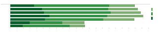
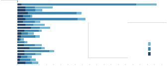
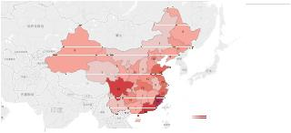
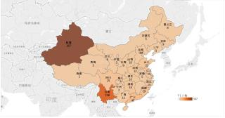
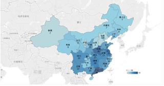

|





0 20 40 60 80 100 120 140 160 180 200 220 240 260 280 300 320 340 360
380 400 420
总数
Monday
Tuesday
Wednesday
Thursday
Friday
Saturday
Sunday
三类事件发生weekday分布
事件类型
1
2
3
图
11:
三类事件weekday时间分布
0 10 20 30 40 50 60 70 80 90 100 110 120 130 140 150 160 170 180 190 200
总数
7月13日（非节日）
除夕
端午节
儿童节
妇女节
国庆节
建党节
建军节
教师节
腊八节
劳动节
母亲节
七夕节
青年节
清明节
圣诞节
愚人节
元旦
元宵节
中秋节
中元节
重阳节
事件类型
1
2
3
图
12:
三类事件节日分布
事件的发生。可见新闻媒体的传播对同系列事件的发
生具有较大影响。
4.1.3
不同类事件共性分析
在上一节中，我们分析了同系列事件在时间、空
间、新闻媒体传播上的触发关系，找到了一些规律。我
们发现其实不仅是同系列存在这些触发关系，在不同
系列事件的分布规律中，也会存在一些共性。这一节
中，我们仍然从时间、空间、新闻媒体三个角度对三
类危害公共安全事件进行分析，发现三类事件之间的
分布规律共性，进而找到事件发生的影响因素。
(1)时间特征共性分析
从图??中我们可以看出三类危害公共安全事件均
在工作日发生次数的较多，而在双休日发生次数的较
少。而从节日分布的角度来看(图??)，元旦、除夕、建
党节等均是三类危害公共安全事件的多发时段。
(2)空间特征共性分析
从三类事件的发生次数空间分布图??∼??中可以
看出：公交车爆炸事件多发生于华东地区，包括山东、
江苏、浙江以及福建、广东等省；校园砍杀事件多发
生于西部边境省份，包括新疆自治区、云南省；校园
砍杀事件则多分布于中国南方地区，河南、广东、江
苏等省。
(3)媒体特征共性分析
如图??所示，当某一系列一起特大事件(日报导量
超过1000条的事件)发生时，在一周时间内往往会伴随
有不同系列事件的重大事件(日报导量超过500条的事
件)发生。
4.2
公共安全事件可视化
为了更好地一体化展示事件发生的时间、地点、
严重程度、事件类型，我们以动态网页的形式对三类
公共事件从进行了可视化展示，如图??所示。
可视化展示的数据为2013.1∼2014.4的15个月的公
共事件数据。以周为单位进行数据展示，每三秒钟动
1 52
F1
图
13:
公交车爆炸事件发生次数空间分布
图
14:
暴力恐怖事件发生次数空间分布
图
15:
校园砍杀事件发生次数空间分布
态更新一次。可视化以颜色表示三类公共事件，绿色
为公交车爆炸事件、黄色为暴恐事件、红色为校园砍
杀事件；以圈大小表示事件的严重程度(用每个事件的
总报道量表示)；每个圈出现时间表示媒体报导时间。
4.3
事件预测
了解公共危害事件的触发以及传播机理，找到事
件间的影响关系和共性，最终的目的是为了抑制事件
的发生，通过对事件可能发生的时间和地点进行准确
预测，能够提前做好相应的预防措施（加强管制）和
管控方案。本节提供一种事件预测方法，主要针对各
区域（省）在未来一段时间，事件是否发生以及发生
的次数进行预测。
事件预测的框架和数据流如图??所示，主要包括：
特征提取，特征降维，分类与预测，结合事件提取的
结果进行检验4个阶段。
|